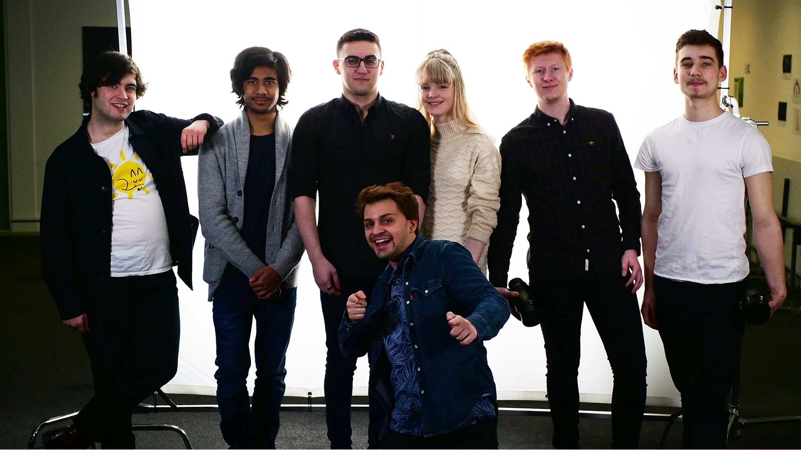

Welcome! My name is Juliano Simioni and this is my online portfolio

I'm a writer/director, from the United Kingdom who has worked on shortfilms and has recently been learning new skills such as visual effects and game development.
Here is some of my featured work
My First Blender
For my first ever full VFX shot I turned to the famous Blender Doughnut tutorial!
How my final year film died
My final year short film was suspended indefinitely due to the pandemic. Here is a video I did for university talking about what I would do differently.
Krammar Vs Krammar Recreation
For my Directing Module in University I was challenged to direct my own take from a scene from Krammar Vs Krammar.
Showreel 2019
An out of date show reel but I haven't been able to add much since the pandemic :/
A Trip to the Stars
A second year short film at University I Assistant Directed on.
Once Upon a Time in New York
A shortfilm I directed in second year. I am proud of certain moments in it.
Alpha Mail
The first short film I directed. It is deeply inspired by Buster Keaton. Just please skip the title sequence, my editor worked hard but wasn't given enough time.
Qualified
I participated in a film challenge which was to make a 60 second short with the theme "qualified" within an hour. We came up with only 30 seconds but I like it.
A Fistful of Milk
The first project I did at University. The brief was "first introductions". We did not follow it at all but it came out funny.